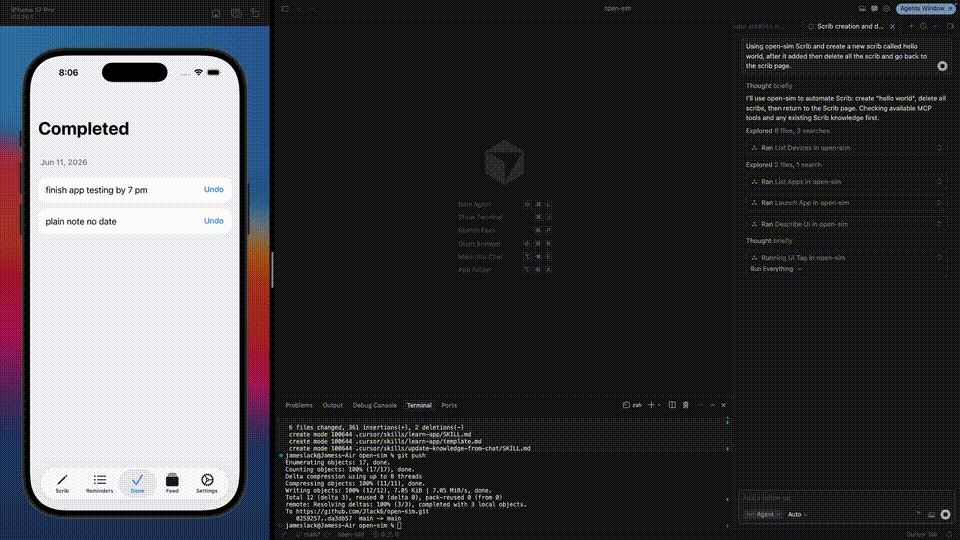

learn-app
First time mapping an app, or a full refresh. Explores tabs, screens, and key flows, then writes knowledge/apps/<slug>.md.
"Learn the Scrib app"
Meet Scratchy — the iguana who drives your simulator. He really likes when people ⭐ the project.
A custom Model Context Protocol (MCP) server that lets Claude drive the
iOS Simulator end-to-end — device control via simctl, and
in-app UI via a generic XCUITest driver.
No hardcoded apps or labels. Claude looks at what's on screen, decides what to do, and acts.

xcrun simctl + XCUITest)npm install
npm run build:all # builds XCUITest driver + Node serverOr separately:
npm run build:driver # compile SimDriverUITests (first time / after Swift changes)
npm run build # compile MCP server.cursor/mcp.json is already configured:
{
"mcpServers": {
"open-sim": {
"command": "node",
"args": ["${workspaceFolder}/dist/index.js"]
}
}
}Open this folder in Cursor → Settings → MCP → enable open-sim.
Nothing is baked in per app. The server exposes generic primitives. Claude reasons about whatever is on screen.
You: "Open Settings and turn on Airplane Mode"
↓
Claude: boot_device → launch_app / open_url / ui_tap
describe_ui → reads accessibility tree (labels, frames, types)
screenshot → sees the screen
ui_tap → taps by labelContains:"Airplane" or coordinates
screenshot → verifies
| Method | Example | When to use |
|---|---|---|
labelContains | "Settings", "Sign In" | Most common — uses visible text |
identifier | "Safari", "email_field" | When accessibility identifiers exist |
type | button, switch, textField | Filter by element kind |
x / y (0–1) | x: 0.5, y: 0.9 | Coordinates from screenshot + screen size |
ui_swipe | direction: "left" | Navigate home screen pages, scroll lists |
After launch_app, the bundle ID is remembered — you don't need to repeat it for UI tools.
open-sim can drive any app with zero hardcoding, but exploring an app from scratch every time is slow. This repo adds a local knowledge layer and Cursor skills so the agent learns an app once and reuses that context.
First time with an app Every task after that
↓ ↓
learn-app skill read knowledge/apps/<app>.md
explore via open-sim follow documented flows
save to knowledge/ fewer describe_ui calls
↓ ↓
update-knowledge-from-chat patch doc after each session
(merge new learnings) agent keeps getting smarter
| Piece | Location | In git? |
|---|---|---|
| App maps (flows, labels, gotchas) | knowledge/apps/<slug>.md | No |
| Test case template | test_cases/template.md | Yes |
| Executable test cases | test_cases/apps/<slug>.md | No |
| learn-app skill | .cursor/skills/learn-app/ | Yes |
| update-knowledge-from-chat | .cursor/skills/update-knowledge-from-chat/ | Yes |
| add-test-case-from-chat | .cursor/skills/add-test-case-from-chat/ | Yes |
First time mapping an app, or a full refresh. Explores tabs, screens, and key flows, then writes knowledge/apps/<slug>.md.
"Learn the Scrib app"
After a session where the agent discovered something new. Merges deltas into the existing file — does not replace the whole doc.
"Update Scrib knowledge from what we just did"
Captures flows worth regression-testing as numbered cases. Creates or updates test_cases/apps/<slug>.md from the template.
"Add test cases from this chat for Scrib"
Numbered, runnable scenarios (TC-SCRIB-001, etc.) with Does / Expected summaries plus Given/When/Then steps.
A persistent XCUITest daemon keeps the runner warm — reading commands from
/tmp/open-sim/active/command.json instead of cold-starting on every tap.
| Action | Cold start (old) | Persistent daemon |
|---|---|---|
| First command | ~20–25s | ~13s (one-time) |
| Tap | ~20–25s | ~2–3s |
| describe_ui | ~25–30s | ~0.5s |
| 6-command flow | ~120–150s | ~10s |
describe_ui uses a single app.snapshot() for the whole accessibility tree (~0.5s instead of several seconds). Batch related actions with ui_act to share a single round-trip.
simctl)| Tool | Description |
|---|---|
list_devices | List simulators + state + UDIDs |
boot_device / shutdown_device | Boot or shut down |
open_simulator | Open the Simulator GUI |
install_app / launch_app / terminate_app | App lifecycle |
screenshot | Capture screen (returns image) |
set_location / set_privacy / set_appearance | Environment |
set_status_bar / push_notification | Status bar & push |
run_simctl | Raw simctl escape hatch |
| Tool | Description |
|---|---|
describe_ui | Accessibility tree: labels, types, frames, hittable state |
ui_tap | Tap by query or normalized coordinates |
ui_swipe | Swipe direction or drag between coordinate pairs |
ui_type | Type text; optionally focus a field first |
ui_long_press | Long press element or coordinate |
ui_wait | Pause for animations/loading |
ui_act | Run up to 20 actions in one session (keeps share sheets open) |
Claude (Cursor MCP)
↓ stdio
open-sim (Node) ── simctl ──→ device/OS control
↓ spawns once: xcodebuild test-without-building (daemon)
SimDriverUITests (Swift) ── poll loop ──→ tap / swipe / type / describe on any app
The XCUITest driver lives in driver/SimDriverHost/. No app-specific logic.
npm run watch # recompile TypeScript on change
npm run build:driver # rebuild after Swift changes
npm run typecheckopen-sim is provided as is, without warranty of any kind. Use it at your own risk. By design, the agent drives your machine on your behalf.
run_simctl executes arbitrary simctl subcommands, and the UI tools tap, type, and swipe wherever the agent decides. Review what you ask it to do.delete_device, erase_device, and uninstall_app can wipe simulators, app data, and settings with no undo.simctl/XCUITest — not physical devices.The author is not liable for any data loss, deleted simulators, or other damage resulting from use of this software.